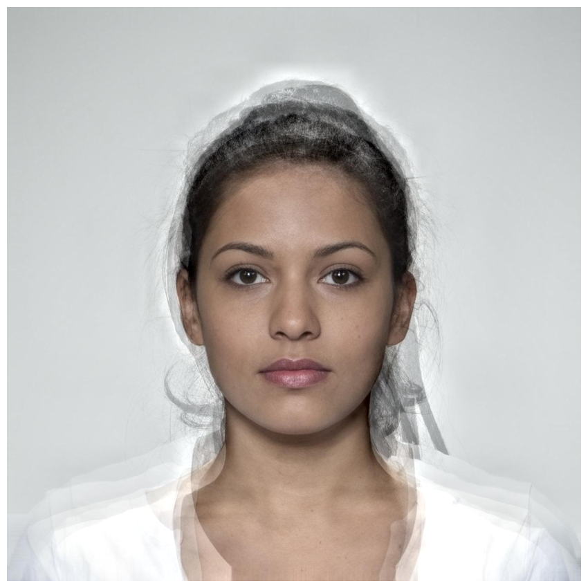
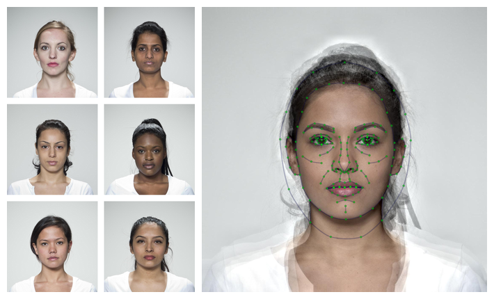
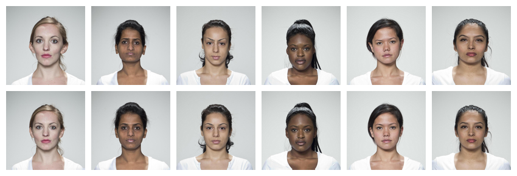
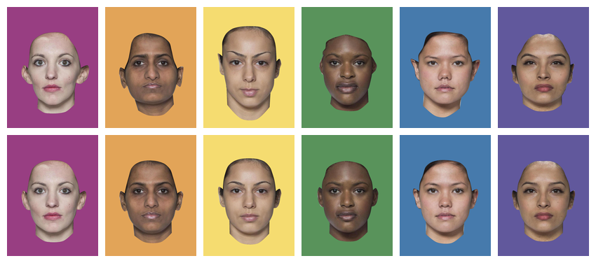
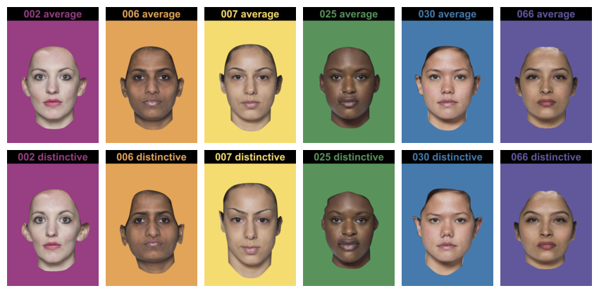
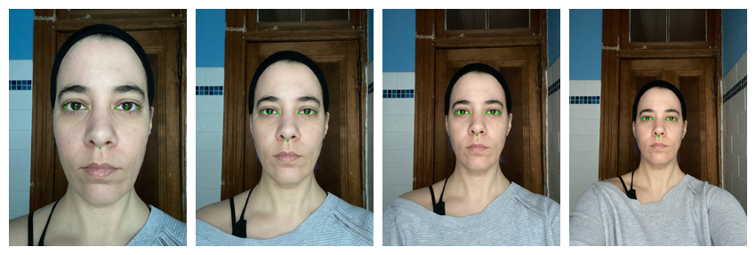
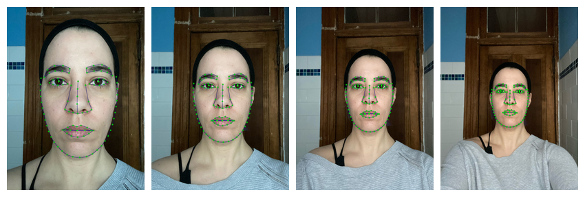
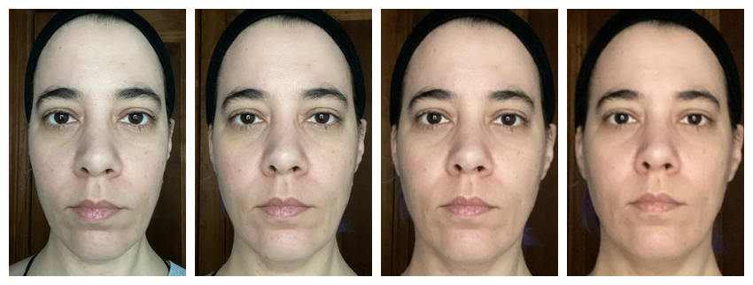
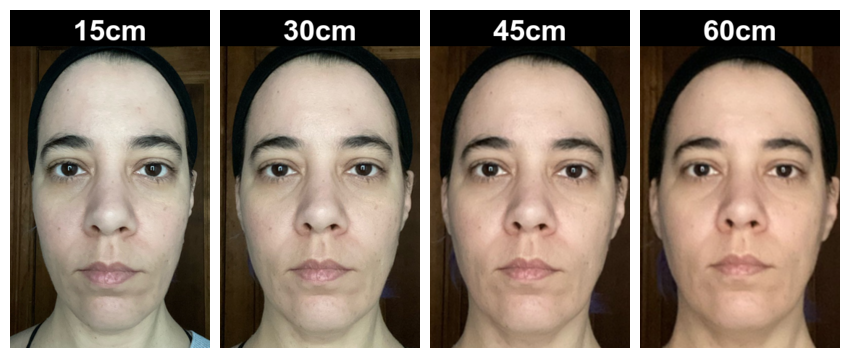
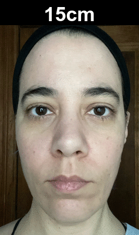

The sections below provide brief examples of what webmorphR can be used for. See articles for more detailed instructions on image manipulations, making figures, and making stimuli.
Installation
You can install the development version from GitHub, as well as the additional stimuli.
# install.packages("remotes")
remotes::install_github("debruine/webmorphR")
remotes::install_github("debruine/webmorphR.stim")Installation can take a few minutes, depending on how many dependency packages you need to install.
Averaging Faces
In this example, we’ll load a few faces from the CC-BY licensed Face Research Lab London Set, average them together, and create a figure.
Load stimuli
Load 6 specific faces from the London image set.
face_set <- load_stim_london("002|006|007|025|030|066")
plot(face_set, nrow = 1)Average faces
These faces already have webmorph templates, so you can make an
average. The avg() function sends the images and templates
to the server at webmorph.org, which does the processing and sends back
the average, so it can take a few seconds. This also means you need an
internet connection for this step.
Note: WebMorph was created because of the difficulty of installing desktop PsychoMorph on many computers, which is why this package uses a web-based API for averaging and transforming. You images are deleted from our server immediately after processing.

Display figure
Create a figure showing the individual faces and the average with the
template superimposed. See plot_stim() for an explanation
of the arguments to the plot() function (an alias for
plot_stim).
# plot individual faces in a grid the same height as the average face
ind <- plot(face_set,
ncol = 2,
padding = 30,
external_pad = FALSE,
maxwidth = avg$avg$width,
maxheight = avg$avg$height)
# draw template on the face, join with individual grid, and plot
tem <- draw_tem(avg, pt.alpha = 0.5, line.alpha = 0.25)
# combine the ind and tem stimuli and plot
c(ind, tem) |> plot(nrow = 1)
Transforming Faces
In this example, we’ll transform the individual images, mask and crop them, and put them together in a single compound figure.
Transform
First, transform images to make them more average. Transforming
manipulates the shape, color, and/or texture of the
trans_img by the specified proportion of the different
between the from_img and the to_img. In this
example, each individual face in face_set is transformed in
shape only either by -50% of the difference between that that face an
average face, making them more distinctive by exaggerating the
non-average features, or by +50%, making them more average.
Set names for the shape, color or
texture argument vector to automatically name the output
stimuli. The trans() function also sends images to
webmorph.org, so can take a minute and requires an internet
connection.
dist_avg <- trans(trans_img = face_set,
from_img = face_set,
to_img = avg,
shape = c(distinctive = -0.5, average = 0.5),
color = 0, texture = 0)
plot(dist_avg, nrow = 2)
Mask and crop
Next, mask the images with rainbow colours and crop them. Making them more distinctive has exaggerated differences in position on the image, so align the eyes to the average position first.
rainbow <- c("#983E82", "#E2A458", "#F5DC70",
"#59935B", "#467AAC", "#61589C")
stimuli <- dist_avg |>
align() |>
mask(c("face", "neck", "ears"), fill = rainbow) |>
crop(0.6, 0.8)
plot(stimuli, nrow = 2)
Save images
Save the stimuli into a new directory. This will create a folder in your working directory called “mystimuli” if it doesn’t exist.
write_stim(stimuli, dir = "mystimuli")Display figure
Easily create figures to illustrate your research. The code below
subsets the stimuli to reorder them with average faces
first, edits the stimulus names to search and replace a part of the
name, adds 120 pixels of black padding to the top of each image, labels
them with their name, and plots all images in two rows.
c(subset(stimuli, "average"),
subset(stimuli, "distinctive")) |>
setnames(pattern = "_03_", replacement = " ") |>
pad(120, 0, 0, 0, fill = "black") |>
label(size = 90,
color = rainbow,
weight = 700,
gravity = "north",
location = "+0+10") |>
plot(nrow = 2)
Automatic Delineation
Read in images with webmorph templates, or automatically delineate images with the python module face_recognition or the web-based software Face++. Auto-delineation with Face++ is more detailed, but requires a free API key from Face++. Auto-delineation with python doesn’t transfer your images to a third party, but requires the webmorphR.dlib package and some python setup using reticulate.
Resize and auto-delineate
Auto-delineation takes a few seconds per face, so you will see a progress bar in the console. You may also see some startup output from reticulate the first time you use this function in a session.
stimuli <- load_stim_zoom() |>
resize(1/2) |>
auto_delin(replace = TRUE)
draw_tem(stimuli, pt.size = 10) |> plot()
Alternatively, you can use the Face++ auto-delineator by setting
model = "fpp106". This requires you to set up a Face++
account and set some environment variables (see the Making Stimuli vignette). It transfers
your images to Face++, so make sure you read their privacy
information.
stimuli <- load_stim_zoom() |>
resize(1/2) |>
auto_delin(model = "fpp106", replace = TRUE)
draw_tem(stimuli, pt.size = 8) |> plot()
Align and crop
Now you can procrustes* align the images and crop them all to the same dimensions.
aligned <- stimuli |>
align(procrustes = TRUE, fill = patch(stimuli)) |>
crop_tem(120, 20, 20, 20)
plot(aligned)
Note: If you get an error message about rgl or
dynlib when using align() with
procrustes = TRUE, and are using a Mac, you may need to
install XQuartz. You can omit the
procrustes argument to default to 2-point alignment, which rotates and
resizes all images so the pupils are in the same position (the average
of the set, unless you manually specify positions).
Pad and Label
Add 50 pixels of image labels.
labelled <- aligned |>
pad(50, 0, 0, 0, fill = "black") |>
label(c("15cm", "30cm", "45cm", "60cm"),
color = "white",
size = 40,
weight = 700,
location = "+0+5")
plot(labelled)
Animate
Turn your images into an animated gif. Make sure you have the
gifski package installed (it doesn’t need to be loaded) to
take advantage of faster gif-making algorithms.
animate(labelled, fps = 2)